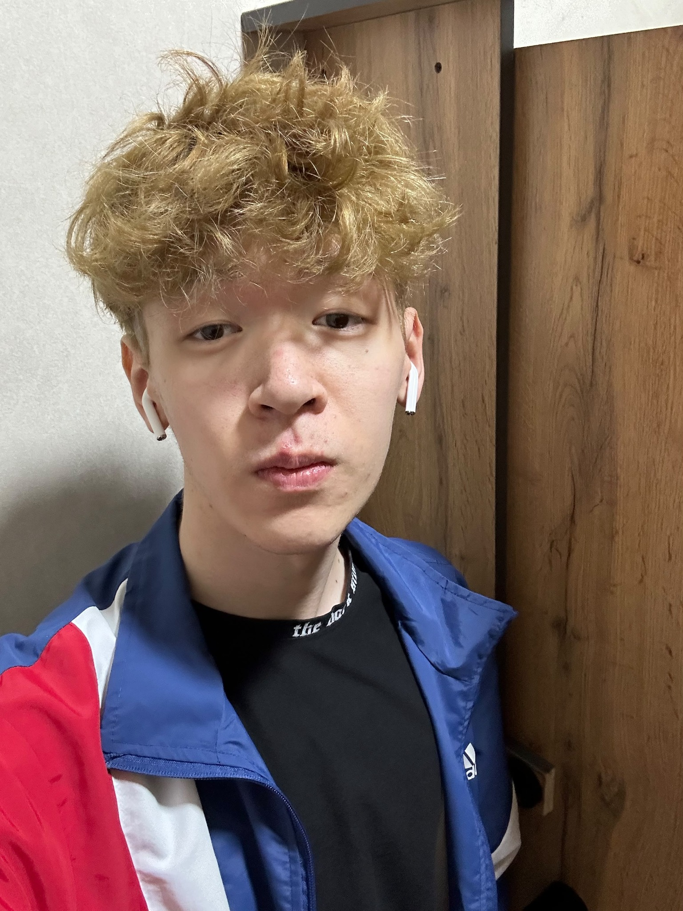

Кемал Бакдаулет
20 лет • Astana International University • Казахстан
Обо мне
Меня зовут Кемал Бакдаулет, мне 20 лет. Я обучаюсь в Astana International University (AIU) и развиваюсь в сфере информационных технологий.
Мне интересно создавать цифровые продукты, изучать программирование и находить практическое применение современным технологиям. Я стараюсь постоянно развиваться и применять полученные знания на практике.
Образование
Astana IT University
Студент направления информационных технологий. В процессе обучения изучаю программирование, базы данных, веб-разработку и другие IT-дисциплины.
Навыки
Технические навыки
Личные качества
Ответственность, обучаемость, интерес к технологиям, самостоятельность, умение работать в команде и желание постоянно развиваться.
Моя цель
Моя цель — получить сильную профессиональную базу, развить навыки программирования и стать квалифицированным IT-специалистом. В будущем хочу работать над интересными проектами и создавать технологии, которые приносят реальную пользу.